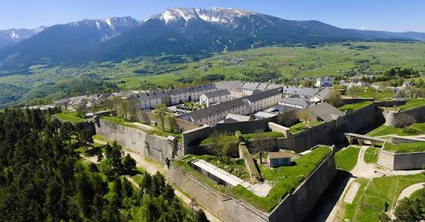

Citadelle de
Mont-LouisLa Cité du Soleil-Roi
patrimoine mondial de l'UNESCO


⟹ Citadelles Vauban ⟸
Une frontière entièrement redessinée. Le traité des Pyrénées de 1659 modifie profondément l’équilibre politique des Pyrénées catalanes : le Roussillon et une partie de la Cerdagne passent sous souveraineté française, mais la nouvelle frontière reste difficile à défendre. La forteresse espagnole de Puigcerdà demeure proche et les routes du col de la Perche ouvrent vers le Conflent, le Capcir et la vallée de l’Aude. Après la guerre de Hollande, Louis XIV décide de renforcer durablement ce secteur.

1679 : Vauban choisit la montagne. Le 17 mars 1679, Vauban reconnaît le terrain et retient un promontoire situé à environ 1 600 mètres d’altitude, au carrefour des voies de Cerdagne, du Capcir, du Conflent et de l’Aude. Plutôt que d’adapter une ville existante, il conçoit une place forte nouvelle, créée ex nihilo. Elle reçoit le nom de Mont-Louis en hommage au Roi-Soleil, affirmation autant politique que militaire de la souveraineté française sur les territoires récemment acquis.
Une ville et une citadelle pensées ensemble. Le projet superpose deux ensembles fortifiés : en contrebas, une ville neuve entourée de remparts ; au-dessus, une citadelle autonome destinée à la garnison. Vauban dessine une enceinte adaptée au relief, protégée par bastions, demi-lunes, fossés secs, chemins couverts, portes à pont-levis et nombreuses échauguettes. La citadelle dispose de casernes, magasins, église et puits, dont le remarquable puits des Forçats, profond d’environ 28 mètres et autrefois équipé d’une grande roue permettant de remonter l’eau.
Un chantier d’une rapidité exceptionnelle. Les travaux principaux sont conduits entre 1679 et 1681, dans des conditions difficiles liées à l’altitude, au climat et au transport des matériaux. La place est opérationnelle en deux ans environ. Le projet initial était encore plus ambitieux : Vauban envisageait également une ville basse et une redoute, qui ne furent jamais réalisées. Cette inachèvement permet néanmoins de lire très clairement le principe d’origine : une cité civile protégée par une citadelle militaire dominante.
Une place forte autant politique que stratégique. Mont-Louis doit contrôler les passages pyrénéens, empêcher une offensive espagnole vers le Roussillon et servir de base à l’armée française. Mais la création d’une ville nouvelle répond aussi à une volonté d’occupation et d’organisation du territoire. Urbanisme régulier, bâtiments militaires, portes monumentales et présence permanente d’une garnison matérialisent l’autorité de Louis XIV au cœur de la montagne catalane.
Trois siècles de présence militaire. Contrairement à de nombreuses places de Vauban devenues civiles, la citadelle de Mont-Louis conserve une vocation militaire presque continue. Les ouvrages sont entretenus et adaptés au fil des siècles sans perdre l’essentiel de leur organisation du XVIIe siècle. Depuis 1964, la citadelle accueille le Centre national d’entraînement commando, ce qui en fait l’un des rares ouvrages conçus par Vauban encore occupés par l’armée.
Un patrimoine de valeur universelle. La conservation exceptionnelle de la ville, de la citadelle, des portes, des échauguettes, des fossés et des bâtiments militaires permet de comprendre avec une rare netteté la conception vaubanienne d’une place forte de montagne. En juillet 2008, Mont-Louis est inscrite sur la Liste du patrimoine mondial de l’UNESCO avec onze autres ensembles constituant les « Fortifications de Vauban ». Elle représente au sein de ce réseau le modèle de la ville neuve fortifiée adaptée à un site montagnard.
Mont-Louis illustre une facette rare du travail de Vauban : la création d'une ville entière, ex nihilo, plutôt que le simple renforcement d'un site existant. Parmi la douzaine de villes ainsi fondées par l'ingénieur du roi, seules six ont vu le jour en France — Mont-Louis en est l'une des mieux conservées, tant dans son architecture que dans sa vocation militaire d'origine.
Une ville pensée tout entière comme un instrument de défense de la frontière.
— Réseau des sites majeurs de VaubanTrois siècles plus tard, la citadelle poursuit sa mission militaire, tandis que la ville haute s'est ouverte aux visiteurs venus découvrir, entre remparts et four solaire, deux visages complémentaires de l'ingéniosité française : celle du XVIIe siècle et celle du XXe.
Villefranche-de-Conflent et le Fort Libéria à une vingtaine de minutes en Train Jaune, pour poursuivre la découverte du réseau Vauban.
Four solaire d'Odeillo héritier direct de l'expérimentation menée à Mont-Louis, aujourd'hui plus grand four solaire d'Europe.
Le Train Jaune qui traverse la Cerdagne avec ses ponts vertigineux et ses villages perchés.
Le sentier des oiseaux au pied des remparts, pour apprécier le génie de Vauban depuis l'extérieur de la cité.